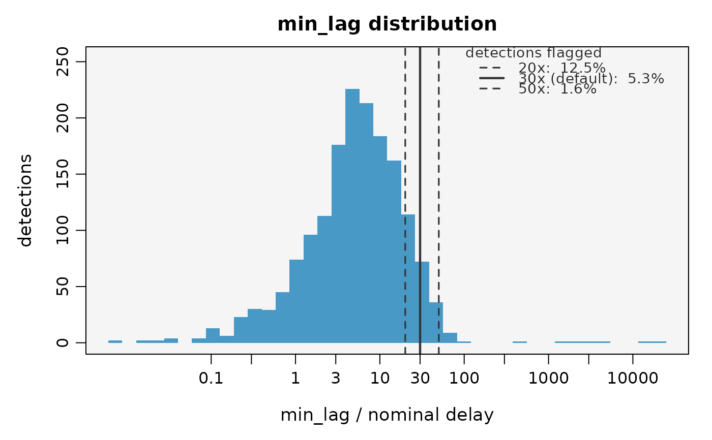

Plots the empirical distribution of min_lag - each detection's time gap to the nearest other
detection of the same transmitter on the same receiver - normalised by the transmitter nominal
delay, and reports the proportion of detections that the short-interval false-detection filter of
filterDetections() would flag at several candidate thresholds. It is a quick check on whether the
default min.lag.factor = 30 is appropriate for a given dataset, rather than assuming it.
Usage
plotMinLag(
data,
nominal.delay = NULL,
factors = c(20, 30, 50),
id.col = NULL,
datetime.col = NULL,
station.col = NULL,
remove.duplicates = TRUE,
color = "#0072B2",
background.color = "grey96",
breaks = 40,
cex = 1,
main = NULL,
file = NULL,
width = NULL,
height = NULL,
res = 300
)Arguments
- data
A
mobyDataobject or a data frame of detections.- nominal.delay
Transmitter nominal (mean) delay, in seconds. A single value applied to all individuals, or a vector named by
id.colfor mixed tag families. Read from themobyDatametadata (nominal.delay) when not supplied. Required: the diagnostic normalisesmin_lagby it.- factors
Reference threshold multipliers (of the nominal delay) to overlay on the plot and tabulate. Defaults to
c(20, 30, 50); the middle value is thefilterDetections()default.- id.col
Name of the column with animal IDs. Resolved from the metadata / canonical default ("ID") when not supplied.
- datetime.col
Name of the column with detection timestamps (
POSIXct). Resolved from the metadata / canonical default ("datetime") when not supplied.- station.col
Name of the receiver/station column. Resolved from the metadata / canonical default ("station") when not supplied.
- remove.duplicates
Logical; drop exact-duplicate records (same ID, timestamp and station) before computing
min_lag, matching the stage-0 behaviour offilterDetections(). Defaults to TRUE.- color
Fill colour for the histogram. Defaults to a colourblind-safe blue.
- background.color
Panel background colour. Defaults to "grey96";
NAdraws none.- breaks
Number of histogram bins on the log10 axis. Defaults to 40.
- cex
Global expansion factor for labels. Defaults to 1.
- main
Optional plot title.
- file
Optional output file. If
NULL(the default), the figure is drawn on the current graphics device - the usual interactive behaviour. If a file path is supplied, moby opens a graphics device chosen from the file extension (.pdf,.svg,.png,.jpg/.jpeg,.tif/.tiffor.bmp), draws the figure to it, and closes the device automatically (also if an error occurs). For multi-page or batch workflows, keepfile = NULLand manage the device yourself (e.g.pdf(...); plot...(); dev.off()).- width, height
Output size in inches. Used only when
fileis supplied. IfNULL(default), a size is derived from the figure's structure (e.g. the number of individuals or panels). These defaults are sensible starting points, not guarantees: dense or unusual figures may still need you to setwidth/heightexplicitly. The two can be set independently.- res
Resolution in pixels per inch, for raster formats only (
.png,.jpg,.tif,.bmp); ignored for vector formats (.pdf,.svg). Used only whenfileis supplied. Defaults to 300.
Value
Invisibly, a data frame with one row per factors value: the multiplier (factor), the
threshold in seconds (threshold_s; NA when nominal.delay varies across individuals), and the
number (n_flagged) and percentage (pct_flagged) of detections flagged - i.e. with min_lag
above the threshold, or a lone decode - at that multiplier.
Details
A genuinely present tag produces bursts of closely spaced detections (small min_lag), whereas an
isolated spurious decode has no nearby companion (large min_lag). The two typically appear as
separate modes on the log axis, and a defensible threshold sits in the valley between them. Read the
plot rather than a single number: if the proportion flagged changes little across the reference
multipliers, the choice is robust; if it changes sharply, the threshold matters and should be
justified for that dataset.
min_lag is computed with the same internal helper used by filterDetections(), so - on the same
input - the flagged proportions reported here match what the filter would remove. The diagnostic
applies only the optional duplicate-removal step (not the pre-tagging / cut-off steps), so run it on
the detections you intend to filter.
Examples
# assess whether the default 30x min_lag threshold suits the data (120 s nominal delay)
flagged <- plotMinLag(rays, nominal.delay = 120)
#> Warning: - 'id.col' converted to factor.

flagged
#> factor threshold_s n_flagged pct_flagged
#> 1 20 2400 206 12.54
#> 2 30 3600 87 5.30
#> 3 50 6000 26 1.58